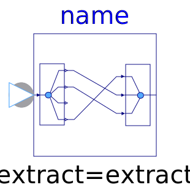

This package contains blocks to combine and extract signals.
| Name | Description |
|---|---|
| Signal replicator | |
|  ExtractSignal | Extract signals from an input signal vector |
| Extract scalar signal out of signal vector dependent on IntegerRealInput index | |
| Pass a Complex signal through without modification |